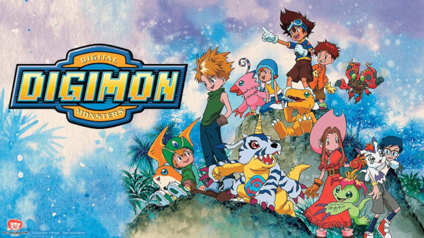

No ano de 1996 surge o Tamagotchi, criado por Akihiro Yokoi, Aki Maita e Takeichi Hongo, que foi uma das inspirações para o primeiro lançamento da franquia, um aparelho comercializado em junho de 1997 com o nome Digimon, abreviação de Digital Monsters — literalmente "Monstros Digitais" em português. Visando o público masculino e criado por Akiyoshi Hongo (pseudônimo que se refere aos criadores do Tamagotchi), esse aparelho apresenta aos jogadores um animal de estimação virtual composto inteiramente por dados e concebidos para reproduzir e lutar. Em fevereiro de 1998, o jogo de luta DigiMon, compatível com Windows 95 e desenvolvido pela Rapture Technologies, Inc., foi anunciado. O mangá one-shot C'mon Digimon, desenhado por Tenya Yabuno, foi publicado na revista japonesa V-Jump da editora Shueisha em 1997
Uma segunda geração de virtual pets foi comercializada seis meses após o lançamento da primeira, seguida por uma terceira em 1998. Cada jogador começa com uma criatura digital em nível bebê que possui um número limitado de ataques e transformações e para deixá-la mais forte se deve treinar e alimentá-la; quando ela é bem-sucedida em um treino, ela torna-se forte, quando falha, torna-se fraca. Dois aparelhos podem ser conectados, permitindo que dois jogadores possam batalhar com suas respectivas criaturas, uma inovação na época, entretanto, a batalha só é possível a partir do momento que a criatura é do nível criança ou maior. Parques infantis e metrôs eram onde se concentravam a maioria dos usuários do aparelho; o virtual pet foi proibido em algumas escolas asiáticas por ser considerado por pais e professores como muito barulhento e violento. Os primeiros digimons foram criados pelo designer japonês Kenji Watanabe, influenciado pelos comics; outros tipos de digimons, que até o ano 2000 somavam 279, provieram de amplas discussões e colaborações entre os membros da companhia Bandai.
Anime
A série animada foi lançada no Japão no dia 7 de março de 1999 na emissora Fuji TV, quando foi transmitida pela primeira vez a primeira temporada da série, nomeada Digimon Adventure. A popularização da franquia e uma alta audiência levaram a produção de uma segunda temporada e de filmes relacionado às duas temporadas. A terceira e quarta temporada, lançadas em 2002 e 2003 respectivamente, não foram sequências em relação ao enredo. Em 2006, depois de quase três anos sem anúncios para a televisão, a empresa Toei Animation decidiu em lançar uma nova temporada, denominado Digimon Savers, que apela para consumidores e índices de audiência mais amplos; os produtores decidiram, nessa temporada, em mudar radicalmente o cenário e incluir Agumon, digimon emblemático e conhecido pelos adeptos da série.
Os episódios, todos produzidos pela Toei Animation, são classificados em gêneros de animação, ação, aventura, comédia, drama, fantasia e ficção científica. Em alguns deles contêm um pouco de violência e de elementos visuais explícitos, tal como a nudez. Elas são excluídas ou censuradas na versão estadunidense e versões de alguns países europeus, como a França, para se adaptar para um público mais infantil. Os episódios são produzidos para a promoção de produtos, como cartas de baralho. Em 2012, a empresa estadunidense Saban adquiriu os direitos de distribuição de Digimon no mundo inteiro, exceto no Japão. Em 2017, identifica-se um total de sete temporadas, cronologicamente: Digimon Adventure, Digimon Adventure 02, Digimon Tamers, Digimon Frontier, Digimon Savers, Digimon Xros Wars e Digimon Adventure tri., nos quais são somados mais de duzentos episódios.

Jogos da franquia
História
O primeiro jogo da franquia, Digital Monster Ver. S: Digimon Tamers, foi lançado em 23 de setembro de 1998. As entradas a seguir quase sempre não foram relacionadas entre si, exceto por transportar elementos temáticos e de jogabilidade. Os jogos de Digimon são divididos em duas séries principais: os com mecânica de Animal de estimação virtual junto com os títulos World 2, World 3 e World X (4) que formam a série World, e os jogos baseados na jogabilidade do World 3 que fazem parte da série Story. Existem também títulos spin-off independentes de diversos gêneros, como luta e corrida. Além de outras franquias como Tamagotchi e Magical Witches, que são spin-offs comercializados como parte do multiverso de bichinhos virtuais da Bandai.
Série World
As quatro primeiras entradas: Digimon World, Digimon World 2, Digimon World 3 e Digimon World X (4) não possuem relação em termos de história, e cada uma introduziu uma jogabilidade diferente. O primeiro World definiu o segmento que seria utilizado na série a partir de 2012. Enquanto o World 3 inspirou a série Story.
Após um intervalo de seis anos, Digimon World Re:Digitize foi lançado em 2012 para o PlayStation Portable. A versão Decode foi lançada no Japão em 2013 somente para Nintendo 3DS. O jogo resgatava as mecânicas do jogo de 1999 e consolidou a série com esse estilo de jogabilidade. A próxima entrada, Digimon World -next 0rder-, foi lançado para o PlayStation Vita em 2016 no Japão e sua versão internacional em 2017 para PlayStation 4. É uma continuação do primeiro World
Além disso, há jogos spin-off da série World. Existe o Digimon World: Digital Card Battle lançado no mesmo ano e no mesmo sistema que Digimon World, e sua continuação Digimon World: Digital Card Arena (Digital Battle Arena no exterior). Também existe a trilogia Pocket com Pocket Digimon World, Pocket Digimon World: Wind Battle Disc e Pocket Digimon World: Cool & Nature Battle Disc.
A série World é conhecida pelo seu nível de dificuldade e complexidade, principalmente os com mecânica de Tamagotchi, o que afasta jogadores casuais. Neste tipo de jogo você precisa criar, cuidar e treinar seu monstro para as batalhas. Se você os criar da maneira certa, eles obedecerão às suas ordens. Mas se você não os educar da maneira correta, eles podem desobedecê-lo ou fazer outra coisa. As evoluções dependem de como o jogador cuidou e treinou seu digimon. O monstro possui também um limite de vida em cada estágio de evolução, o que pode ser frustrante para algumas pessoas ter que recomeçar a criar o digimon. As análises dos jogos desta série recomendam apenas se você é um fã hardcore da franquia.
Série Story
O primeiro jogo da série, Digimon Story (originalmente lançado no exterior como Digimon World DS), foi lançado em 2006 no Japão e na América do Norte. A segunda entrada da série é dividida em dois jogos, Sunburst e Moonlight (originalmente lançada no exterior como Digimon World: Dawn e Dusk). O Digimon Story: Lost Evolution foi lançado em 2010 somente no Japão. A quarta parcela também foi lançada somente no Japão, em 2011, com o nome de Digimon Story: Super Xros Wars, que assim como a segunda entrada da série foi dividido em dois jogos, Blue e Red. Fechando assim os jogos lançados para os portáteis da Nintendo.
Após um intervalo de três anos, Digimon Story: Cyber Sleuth foi lançado em 2015 para o PlayStation Vita no Japão e em 2016 para o Playstation 4 no Ocidente, após uma petição feita por fãs. O jogo foi criado com o foco em atrair os fãs antigos da franquia, utilizando de temas mais pesados, piadas de duplo sentido e uma boa quantidade de digimon antigos. Sua contraparte Digimon Story: Cyber Sleuth Hacker's Memory, que conta a história a partir de um outro ponto de vista, foi lançado no Japão para Playstation 4 e Playstation Vita em 2017 e mundialmente em 2018 para as mesmas plataformas. No ano de 2019 foi lançado para Nintendo Switch e PC o Digimon Story Cyber Sleuth: Complete Edition, um pacote que contém os dois jogos, cross-save e digimon presentes no Hacker's Memory no Cyber Sleuth. Antes do lançamento do Hacker's Memory, em 2017, foi revelado que está em desenvolvimento um novo jogo da série Story sem relação com a duologia Cyber Sleuth, que foi dita como encerrada pelo produtor Habu Kazumasa.
A série Story, apesar de possuir um certo nível de dificuldade e complexidade, é mais amigável a jogadores casuais por seguir mecânicas básicas de JRPG, como por exemplo Persona e o Digimon World 3. Neste tipo de jogo você precisa coletar monstros, criar uma party com o digimon, batalhar por turnos, fazer missões principais e sidequests. Existem encontros aleatórios enquanto você explora o mapa, os seus digimon possuem levels para subir, é possível escolher a evolução dos monstros e eles não possuem limite de vida.